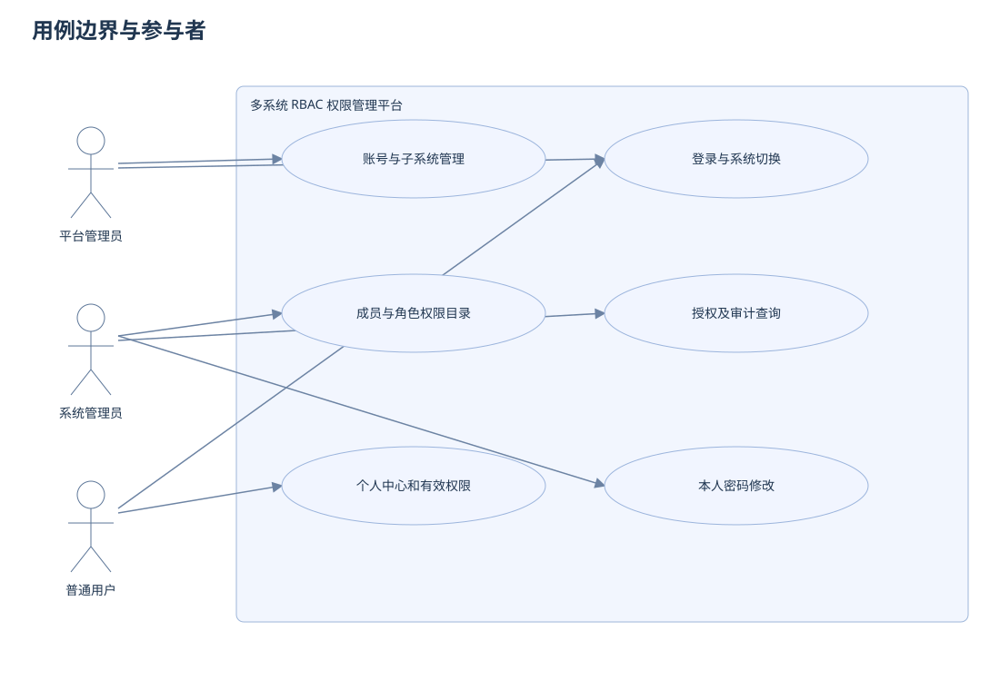
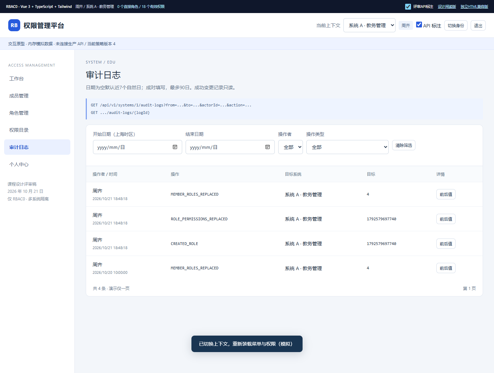
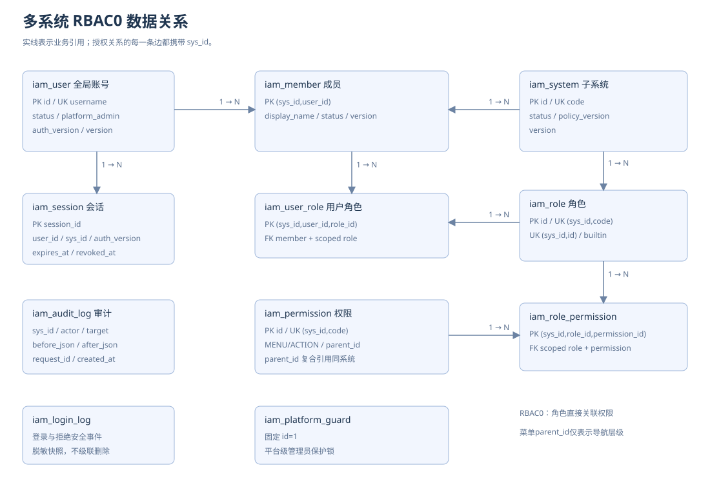
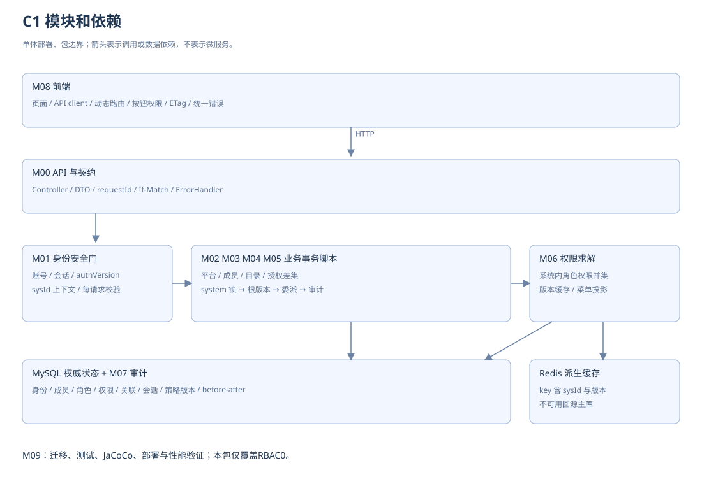
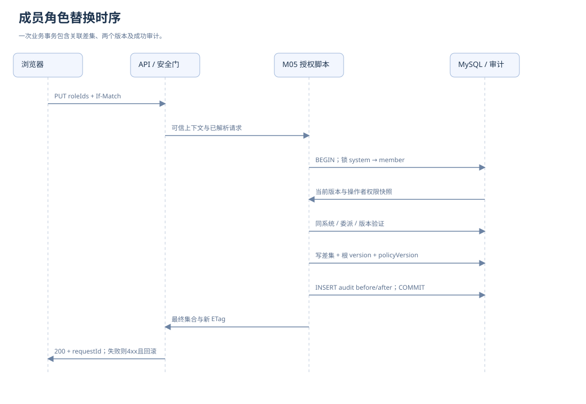
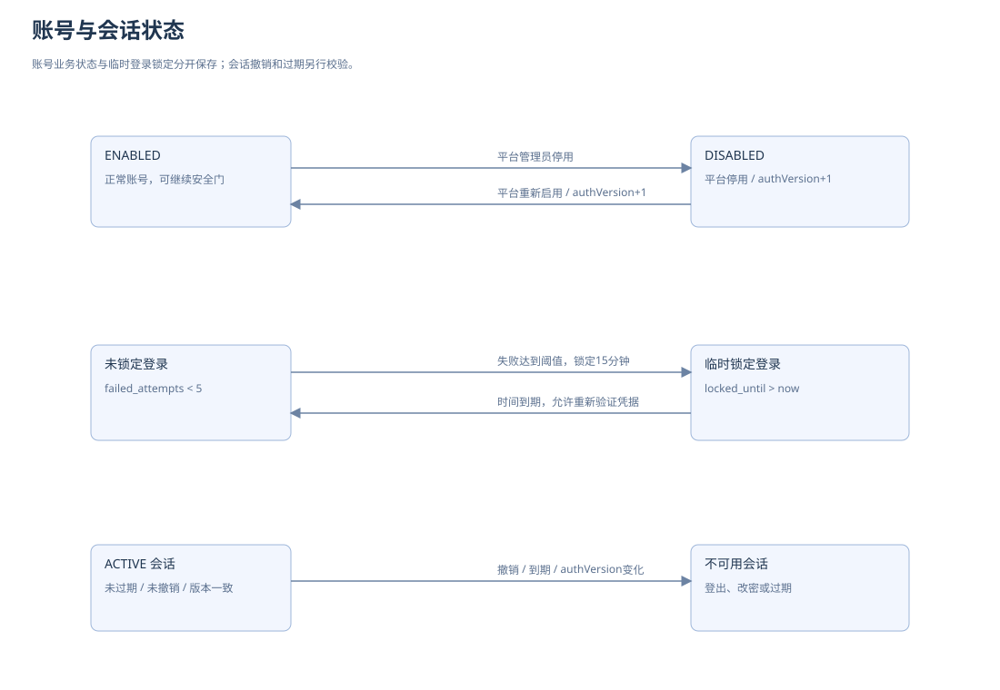
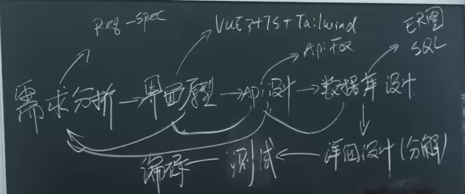

资料依据与设计决策
范围与依据优先级
修订版V1.2，2026-10-21。本次只为第一次检查准备多系统RBAC0。用户通过本系统直接指派的角色获得权限，角色无继承，菜单层级仅表示导航。本包交付设计与模拟原型，不等于已部署完整后端。
用户当前请求决定执行范围；附件用于提炼课程事实和需求，不构成代用户预约、上传仓库、添加成员或发布服务器的操作指令。优先采用2026/10/19评分办法V2的明确检查条款，课程介绍中互不冲突的内容合并使用；二手方案和AI纪要不覆盖原文。
输入资料与实际读取情况
| 编号 | 资料 | 读取及使用 |
|---|---|---|
| S1 | 需求分析.doc | 已读可见正文；多系统、平台/系统管理员/普通用户、后端隔离及前后值审计的业务依据。摘录在sources/需求分析-正文.txt。 |
| S2 | OOAD-RBAC-项目实施方案.md | 已读；课程安排本次重新回到原始PDF核对。 |
| S3 | 智能纪要2026年10月13日 | 已读；参考协作方式，没有与录音逐句核验。 |
| S4 | 新录音.m4a | 仅确认存在，未转写，不声称已听写核验。 |
| S5 | OOAD_Grading_2026(2).pdf | 已完整提取6页，重点渲染复核物理第5—6页；封面V2，2026/10/19，修订历史说明细化第一次检查。 |
| S6 | 0.课程介绍(7).pdf | 已完整提取21页，重点渲染复核第12、16页；核对第3、10、13—15、20—21页相关文字。 |
| S7 | 用户提供的课堂板书截图 | 需求分析→界面原型→API设计→数据库设计→详细设计（分解），再进入编码、测试和反馈；另有req-spec、Vue3+TS+Tailwind、Apifox、ER图/SQL标注。 |
两份PDF副本、逐页提取文本和SHA-256见docs/sources/及source-manifest.json；截图在docs/images/课堂开发步骤.png。本文页码指PDF物理页，评分办法物理第5页印刷页码为第2页。文字提取便于检索，表格已按原页面核对。
已核实的第一次检查要求
| 编号 | 原文内容（概括） | 位置 |
|---|---|---|
| CR-01 | 10月27—29日，20分；前端界面、数据库设计及面向功能的RBAC0后端；课程介绍还明确列API设计。 | S5第5页表3-1；S6第16页 |
| CR-02 | 代码和设计文档提交Gitee，设计文档采用adoc，包含数据库设计和详细设计。 | S5第5页3.2及助教第1项 |
| CR-03 | 可运行的界面原型，RBAC0后端部署在服务器。 | S5第5页助教第2项 |
| CR-04 | 现场跑一遍后端JaCoCo；课程网站交代码地址和JaCoCo报告。 | S5第5页3.2及助教第3项 |
| CR-05 | Gitee开源或将mingqcn加入成员；钉钉接龙预约口试。 | S5第5页3.2 |
| CR-06 | 教师询问需求、存在的问题、采用的设计方法及理由；JavaEE涉及第1—6章、实验1—3。 | S5第6页上部 |
| CR-07 | 三门课同组，每组至多6人；课程设计70%、期末30%；个人和小组各50%，完全无发言个人部分为0。 | S5第4—5页；S6第13、15页 |
| CR-08 | 用例分析、UML、结构化等软件设计方法；RBAC0核心为用户—角色—权限。 | S6第3、10、20—21页 |
实际完成状态见09-第一次检查要求与前四步复核.adoc；列出课程要求不表示已经完成Gitee、部署或JaCoCo操作。
原文差异与处理
课程介绍第12页概述写到RBAC2，而第16页和评分办法检查表末阶段写RBAC3；第二次检查的结束日也有差异。本次只做两份资料均明确的第一次RBAC0，不引入后续模型。评分办法第一次检查表未单列API，课程介绍第16页与板书已明确，因此保留API设计。
评分办法用“面向功能”，课程介绍用“结构化”；本版按功能树、输入输出、函数调用、事务与算法分解，不要求再做一套OO后端。Vue3、TS、Tailwind和Apifox来自板书，两份PDF未指定这些具体工具。StarUML在课程介绍第14页是建议；本包提供PlantUML源，不冒充StarUML原生工程。OpenAPI文件可导入Apifox，不代表已创建线上项目。
设计决策
ADR-01 多系统：全局iam_user与本地iam_member分离，角色/权限/指派带sys_id。该业务范围来自S1，不声称PDF要求SaaS租户功能。
ADR-02 完整性：关联使用同系统复合外键；用例再校验状态、归属与委派；菜单隐藏不替代后端检查。
ADR-03 审计：成功授权差集、根version、policyVersion、脱敏before/after同事务提交，审计失败回滚；失败安全事件单独记录。
ADR-04 缓存：每请求主库检查账号、会话、系统、成员与策略版本；缓存键包含sysId/userId/policyVersion。Redis故障回源；主库安全门不可用503。
ADR-05 生命周期：账号/系统/成员停用退出，业务角色和权限无引用且不受保护才可删除；恢复启用会恢复原指派效果。
ADR-06 结构化实现：Controller→用例事务脚本→Mapper，数据结构传递事实，函数集中处理规则；Java类组织函数本身不等于另一套OO设计。
ADR-07 管理边界：平台维护全局账号；系统管理员只维护本地成员，不改全局密码或平台标记；受保护SYS_ADMIN及其指派由平台管理。
ADR-08 委派：角色变更前后有效权限都不能超出操作者集合；定义权限本身不自动获得权限。应用管理保护不是RBAC2的互斥、基数或先决角色约束。
项目约定与待落实事项
性能数值、覆盖率目标、密码锁定阈值、MySQL版本、缓存与会话策略均为项目选择，PDF未给相应量化门槛，不能当教师评分标准或实测成绩。实际姓名、人工评审、Gitee仓库、服务器和口试预约待小组落实；原录音未核验。机器契约为OpenAPI3.0.3和MySQL8.0.16+。
需求分析
第一次检查基线
依据评分办法V2（2026/10/19）PDF第5页及课程介绍第16页，本阶段为10月27—29日、20分的RBAC0面向功能实现。按课堂顺序先需求、原型、API、数据库，再详细功能分解。课程要求和项目自行选择的性能/密码/覆盖率目标分开记录，详见00和09。
业务目标和边界
为课程中的多个业务子系统提供统一身份、角色和权限管理。平台管理员建立子系统和账号，系统管理员管理自己子系统的成员、角色与权限，普通用户只进入已加入的系统并使用获授权的功能。一个用户在不同系统的权限互不传递。
本次基线实现 RBAC0：一个用户可直接指派多个本系统角色，角色关联多个权限；当前会话使用全部有效直接角色。角色无继承、无互斥或人数等模型约束。MENU 为页面入口，ACTION 为操作码，菜单父子独立授权。
范围外：组织部门、行级数据范围、第三方 SSO、注册找回邮件、工作流、租户计费、跨系统角色继承、角色直接授予用户之外的单独权限、任意 SQL/URL 规则执行。原型中的示例业务系统不在本次业务实现范围内。
角色和信任边界
| 参与者 | 能力 | 限制 |
|---|---|---|
| 平台管理员 | 全局账号、子系统、成员初始化、受保护管理员角色、跨系统审计 | 使用平台会话；进入子系统时取得该系统上下文。所有越权特权操作留审计。 |
| 系统管理员 | 本系统成员、业务角色、权限定义、授权和本系统审计 | 不能改全局账号、平台标记和受保护 SYS_ADMIN；不能把 A 的对象绑定到 B。 |
| 普通用户 | 登录、切换已加入系统、个人信息和本人的权限清单 | 不拥有管理 API 权限；前端隐藏入口，后端仍独立鉴权。 |
| 未认证访问者 | 登录与静态公开的登录页 | 不能枚举用户、角色或有权限的系统。 |

功能需求条目
| 编号 | 阶段 | 需求 | 可验证的验收标准 |
|---|---|---|---|
| FR-01 | RBAC0 | 登录、登出、系统上下文切换 | 凭据正确且账号、成员和系统启用才签发系统会话；登出后旧会话下一次请求失败；切换系统重新校验成员资格。 |
| FR-02 | RBAC0 | 全局账号管理 | 平台管理员可创建、检索、改昵称和全局启停账号；username 全局唯一；密码哈希不出现在 API 和审计。 |
| FR-03 | RBAC0 | 子系统管理 | 平台管理员可创建、修改名称描述和停用子系统；sysCode 全局唯一且创建后不可改；停用后所有系统请求失败。 |
| FR-04 | RBAC0 | 成员管理 | 系统管理员按精确用户名添加已有账号、查询和修改本系统显示名与状态；停用 A 成员不影响 B 的成员资格。 |
| FR-05 | RBAC0 | 角色管理 | 角色编码在系统内唯一；可查增改启停；有关联或内置角色不能删除；系统管理员不能修改受保护角色。 |
| FR-06 | RBAC0 | 权限与菜单配置 | 权限码在系统内唯一；支持 MENU、ACTION；ACTION 可绑定按钮和多个后端操作；菜单无环，MENU 路由只能取受控路由目录，ACTION 路由必须为空。 |
| FR-07 | RBAC0 | 成员角色指派 | 全量替换一个成员的角色集合；空数组表示清空；重复 ID 自动去重；任意异系统或无效对象导致整批拒绝，不能部分成功。 |
| FR-08 | RBAC0 | 角色权限指派 | 全量替换业务角色的权限集合；父子独立勾选；未授权菜单父项仅作导航容器；授权者不能授予自己有效集合之外的权限。 |
| FR-09 | RBAC0 | 统一鉴权与有效权限查询 | 后端按当前系统、会话和 permissionCode 校验每个请求；对象不属于本系统时返回 404；无对应操作权限返回 403；提供本人的菜单和权限。 |
| FR-10 | RBAC0 | 权限变更审计与查询 | 角色指派和权限指派必须记录排序去重后的前后集合、操作者、系统、目标、时间、requestId；成功审计失败则业务回滚。 |
| FR-11 | RBAC0 | 个人中心和密码修改 | 可查看本人身份、当前角色和权限；验证旧密码后修改，递增 authVersion 并撤销全部旧会话，要求重新登录。 |
通用业务规则
BR-01 所有 ID 在 JSON 中用十进制字符串，避免浏览器整数精度丢失。服务端生成 BIGINT ID，不信任客户端提交的 sys_id。
BR-02 路径 sysId 必须等于会话绑定 sysId；平台会话只可访问平台 API，进入子系统先切换上下文。平台管理员在系统会话中仍须绑定当前 sysId，跨系统访问必须显式切换。
BR-03 角色、权限和成员各自带版本号；PUT/PATCH/DELETE 要求 If-Match。授权集合的 ETag 是所属成员或角色的 version；提交成功统一递增该根对象版本，含授权变更。GET 的 ETag 按 "7" 格式返回。
BR-04 系统管理员可授予的权限不超过自己在写事务内重新计算的有效权限；给成员分配的每个角色，其有效权限也必须为操作者权限子集。SYS_ADMIN 及其权限集合与成员指派仅平台管理员维护，防止通过修改他人角色绕过委派边界。
BR-05 账号不能自助修改平台管理员标记。平台管理员之间的变更需平台会话，且保留至少一个启用的平台管理员；同一平台 guard 行串行化此类写入。
BR-06 系统停用、成员停用、角色或权限停用只阻止其生效，不删除历史；无角色用户仍可访问个人中心。停用角色不参与权限计算，但原始指派仍存储，重新启用将恢复，界面必须明确提示。
BR-07 username 为 3–32 个小写字母数字下划线，角色与系统编码为 2–40 个大写字母数字下划线，permissionCode 为 3–80 个小写字母数字冒号下划线。编码创建后不可修改；displayName 为 1–64 字符，描述不超过 500 字符。
BR-08 新密码为 12–64 字符，至少包含字母与数字；密码哈希用经过配置和基准验证的自适应哈希算法保存。连续 5 次失败临时锁定账号 15 分钟，同时做 IP 与账号限流；账号全局禁用优先于解锁。
BR-09 所有过滤参数采用参数化查询，sort 只能取白名单字段。输入名称以纯文本显示，审计快照按字段白名单脱敏。
BR-10 停用角色或权限不参与有效权限计算。变更菜单 parentId 只影响导航；导航容器出现不代表用户取得该菜单的业务访问权限。
关键用例规约
UC-01 登录与系统切换。参与者为全部有效账号；前置为目标系统存在并启用。主流程：输入用户名、密码及 sysId，校验限流和凭据、账号、成员、系统状态，创建会话并返回短期访问 token，读取 /me、菜单和权限。平台管理员可不传 sysId 登录平台；普通账号不传则拒绝。切换时 /me/systems 只返回本人可进入的系统，通过 POST contexts 新建会话，旧上下文会话撤销。异常：错误凭据统一提示、429 限流、423 临时锁定、403 无成员资格。后置：不会因为切换而新增成员或角色。
UC-02 维护全局账号。平台管理员登录平台，查询账号，填写用户名、显示名、初始密码；校验唯一性后创建。变更状态带 If-Match，锁 guard 后验证至少一个启用平台管理员，更新账号 authVersion 并使旧会话失效。异常：409 重名、412 版本冲突、409 最后管理员保护。系统管理员请求全局接口必须 403。
UC-03 维护子系统。平台管理员创建业务系统，初始化系统内 SYS_ADMIN 角色与固定管理权限；使用成员和指派 API 添加首位管理员。未完成初始化前仅平台管理员可进入。可修改名称描述或停用系统，不允许物理删除带历史的系统。
UC-04 维护成员。系统管理员在当前系统精确输入 username 添加已有账号，未知或不可添加的账号使用统一业务提示；只修改成员的本系统 displayName 和 status。成员已存在返回 409，不能通过该操作改全局密码和平台标记。
UC-05 维护角色与权限。创建业务角色和权限；编辑名称状态带版本；权限 parentId 必须是本系统 MENU，祖先链无环。删除角色前检查指派、权限引用；删除权限前检查子节点和授权引用。有引用返回 409，建议先停用。受保护对象只允许平台管理员操作。
UC-06 指派成员角色。前置：操作者有 sys:member:assign，目标成员在当前系统。读取当前集合及 ETag；修改勾选；提交完整 roleIds 与 If-Match。服务器锁系统行、重验操作者权限和对象归属，再锁成员并验版本，验证所有候选角色、委派规则，计算差集，替换关联、递增成员版本和策略版本、写 before/after 审计，同事务提交。异常：403 委派失败、404 异系统对象、412 并发修改、409 受保护对象或业务冲突；任何失败均无部分写入。
UC-07 指派角色权限。前置有 sys:role:grant。读取角色及当前权限集合，菜单和操作独立勾选；提交完整 permissionIds。事务与 UC-06 一致，锁角色、校验非受保护及可委派集合；清空允许。提交后下一次开始的请求读取新策略版本；已通过鉴权的在途请求允许完成。
UC-08 请求鉴权。路由元数据确定所需权限码；依次验证签名有效期、会话和账号版本、系统和成员状态、sysId 一致性，读取当前策略版本，以此求有效权限。匹配通过才进入对象查询，并在 SQL 中带 sys_id。匿名 401，无操作权限 403，跨系统对象 404。前端不能通过提交 permissionCodes 给自己授权。
UC-09 查询审计。系统管理员只能查询当前系统，平台管理员在平台日志页可按系统筛选；分页、时间、操作者和操作类型过滤，详情显示脱敏前后值。日志只读，不提供删除、覆盖或自由 SQL 搜索 API。
UC-10 修改本人密码。验证旧密码，更新密码哈希并递增 authVersion，在同事务记录不含密码的审计。接口返回成功后所有旧 token 失效，界面转登录；失败不得泄露密码或哈希。
非功能需求与验收计划
下表全部为本稿提出的可测目标，尚无实测数据；若课程原始要求不同，应由小组评审后改基线。
| 编号 | 目标 | 验收方式 |
|---|---|---|
| NFR-01 | 隔离与最小权限 | 账号 A 管系统 A 但仅为 B 普通成员；替换 path、body、ID、缓存键和 roleIds 的全部攻击用例均不得获得额外权限。 |
| NFR-02 | 撤权一致性 | 成功提交后，新开始的鉴权读取主库状态和最新策略版本，旧缓存不能命中；跨实例验证。已完成鉴权的在途调用不承诺追溯撤销。 |
| NFR-03 | 性能目标 | 4 vCPU 8 GB 应用、独立数据库、100k 账号、1m 指派、200 并发、持续 10 分钟；鉴权吞吐 ≥300 请求/秒，P95 ≤150ms，管理列表 P95 ≤300ms，技术失败率 <0.1%。记录实际网络、连接池及命中率，不能与原始目标混写。 |
| NFR-04 | 并发正确性 | 同一根对象两个相同旧版本写入至多一个成功；并发授予、停用变更无丢失更新或越权。 |
| NFR-05 | 审计可靠性 | 故意让日志 INSERT 失败，权限变更回滚；日志可由 requestId 串联，无密码、token、完整 Authorization 头。 |
| NFR-06 | 可用与故障行为 | Redis 不可用回源主库；主库不可用鉴权 503；所有查询分页 pageSize ≤100；日志默认近 7 个自然日，日期成对，最多 90 个自然日。 |
| NFR-07 | 交互可用 | PC 与 375px 窄屏操作可完成；表单具标签、错误信息、键盘焦点；列表加载、空、错、冲突、无权限均有状态。 |
| NFR-08 | 可维护与可复现 | 同一 OpenAPI 和验收数据验证各模块；保存 .adoc、SQL、UML 源和设计决策；JaCoCo 覆盖认证、授权、隔离和并发规则，目标业务分支覆盖 ≥70%，不以排除业务类修饰结果。 |
验收场景
AT-01 平台管理员创建系统 A/B，给同一用户在 A 指派 SYS_ADMIN，在 B 指派 READER；A 可管理，B 只能查看个人中心和被授予菜单。AT-02 B 身份访问 A 路径或注入 A 的角色 ID，拒绝且没有写入。
AT-03 创建业务角色并绑定两项权限，为成员授权；成员重新请求出现对应菜单和按钮。撤销后旧 token 下一请求不能执行操作。AT-04 两位管理员使用同一 ETag 提交不同集合，第二笔返回 412，刷新显示第一笔结果。
AT-05 授权清空、重复 ID、非法 ID、停用角色、权限停用、菜单无父授权、受保护管理员角色分别按规则处理。AT-06 每笔成功授权有完整前后值；审计故障导致整笔回滚。
术语表
| 术语 | 统一含义 |
|---|---|
| 平台 Platform | 管理全局账号和多个业务子系统的控制面。 |
| 子系统 System | 独立权限边界，数据库字段 sys_id，API 字段 sysId，路径 /systems/{sysId}。 |
| 用户 User | 全局身份，用户名唯一；不直接持有业务权限。 |
| 成员 Member | 某 userId 在某 sysId 的资格与本地状态；可以停用而不影响其他系统。 |
| 角色 Role | 某系统内的一组权限；身份标签“系统管理员”由受保护 SYS_ADMIN 角色承担。 |
| 权限 Permission | 逻辑操作 permissionCode；MENU 表示页面入口权限，ACTION 表示操作权限，可被按钮和后端共同引用。 |
| UA | 用户角色指派，通过 (sys_id,user_id,role_id) 关联。 |
| PA | 角色权限指派，通过 (sys_id,role_id,permission_id) 关联。 |
| 会话 Session | 一次绑定身份和系统上下文的访问状态；token 引用服务端 sessionId。 |
| 会话角色 | 当前系统内全部有效直接指派角色；本包不提供选择角色子集的接口。 |
| policyVersion | 子系统权限策略版本。授权、角色和权限状态、成员资格变化递增。 |
| version 与 ETag | 根资源并发版本；HTTP If-Match 防止覆盖他人已提交修改，与 policyVersion 含义不同。 |
| authVersion | 全局账号安全版本；改密、全局启停时变化，旧会话不能继续使用。 |
| 事务脚本 | 按用例组织步骤的结构化服务；不是拒绝任何类或接口。 |
| 纯函数 | 输入相同输出相同，不访问数据库、缓存、时钟、全局可变变量，不写外部状态。 |
| 原型 | 内存交互模型，用于需求评审；不等于已实现或已验证的生产系统。 |
界面原型设计
原型运行与交互范围
优先打开 prototype/vue/dist/index.html（已构建、无CDN）；兼容版为 prototype/index.html，两者均无需安装即可查看。默认登录页可选择“平台管理员”“系统管理员”“普通用户”三类身份和系统A/B；初始口令DemoOnly12345。新建账号及改密仅在页面内存口令表生效，刷新恢复，不写演示数据和审计。刷新重置全部模拟数据。“API标注”是设计注释，不是真实网络请求。
实现的本地交互：登录退出、上下文切换、导航、列表筛选、新建和编辑账号/子系统/成员/角色/权限、启停、删除前引用检查、勾选授权、保存并展示前后值审计、查看个人权限、模拟旧版本提交、切换空状态和错误状态。本原型仅提供 RBAC0 页面。
原型在浏览器侧模拟访问边界，数据都在同一页面内。生产系统必须按 API 和详细设计在服务器重新执行全部校验。
板书技术标注的对应工程
prototype/vue提供Vue3、TypeScript、Tailwind和Vite工程，package-lock.json锁定版本；npm run build实际执行Vue/TS检查和Vite打包，生成可直接以file方式打开的dist。记录见validation/vue-build.json，离线浏览器行为见vue-browser-report.json。
这是增量工程化：Vue单文件组件和TS负责宿主、生命周期、类型化交互端口、当前身份摘要和评审控制；业务页面复用共享app.js的DOM交互引擎，构建前生成适配文件。没有全量TS重写，类型检查不覆盖JS引擎内部；不将工程构建当作生产前端或Java后端编译。该边界也写入工程README，避免仅有技术栈标签却没有实际工程。

信息架构和页面清单
| 页面 | 路由 | 可见身份 | 内容及主要动作 |
|---|---|---|---|
| P01 | /login | 所有 | 演示身份、目标上下文、登录反馈。 |
| P02 | /overview | 已登录 | 当前系统、身份、角色、权限及快速进入；计数均来自模拟数据，不展示虚构性能。 |
| P03 | /platform/systems | 平台管理员 | 系统列表、搜索、创建、编辑、启停、进入系统。 |
| P04 | /platform/users | 平台管理员 | 全局账号列表、创建、显示名编辑、启停，禁止在系统成员页改全局账号。 |
| P05 | /systems/:sysId/members | 系统管理员及具有查询权限者 | 当前系统成员、本地状态、添加成员、编辑、角色分配抽屉。 |
| P06 | /systems/:sysId/roles | 有角色查询权限者 | 角色列表、创建、修改、启停、删除、权限分配；内置角色标识。 |
| P07 | /systems/:sysId/permissions | 有权限查询权限者 | 菜单操作树、类型、编码、路由、创建编辑、停用和删除。 |
| P08 | 成员角色分配弹窗 | 有成员指派权限者 | 显示当前集合、候选角色及编码、版本、新增与移除差集、勾选/清空、保存；异系统候选不显示。 |
| P09 | 角色权限分配弹窗 | 有角色授权权限者 | MENU/ACTION 独立勾选，不自动级联；展示当前版本和变更差集。 |
| P10 | /audit 或 /platform/audit | 相应审计查询权限者 | 时间范围、操作者、类型，平台页额外按系统筛选；前后值详情，只读。 |
| P11 | /profile | 已登录 | 全局身份、当前成员状态、直接角色、有效权限、改密表单和退出。 |
| P12 | 403 / 404 / 网络错误 | 所有 | 无权访问、对象不存在、服务暂不可用；提供返回和重试。 |
页面控件与 API 映射
|界面动作 |请求 |响应与反馈
|登录提交 |POST /api/v1/auth/sessions |201 后取 me、menus、permissions；401 提示凭据错误，423 提示临时锁定，429 提示稍后重试。
|上下文下拉 |GET /api/v1/me/systems；POST /api/v1/auth/contexts |创建新上下文后重新加载菜单并清空旧页数据，旧会话撤销。
|账号列表/新建 |GET/POST /api/v1/platform/users |分页搜索；201 后进入详情或刷新列表；409 显示用户名占用。
|账号/系统编辑 |PATCH 对应资源，If-Match |412 保留表单并提示刷新比对；不自动覆盖。
|成员筛选/添加 |GET/POST /api/v1/systems/{sysId}/members |添加使用精确 username；全局账号不存在需平台管理员先创建。
|角色指派打开/保存 |GET/PUT /api/v1/systems/{sysId}/members/{userId}/roles |GET 返回当前集合、options与ETag；PUT全量roleIds；409显示受保护或停用对象等原因。
|权限分配打开/保存 |GET/PUT /api/v1/systems/{sysId}/roles/{roleId}/permissions |GET返回当前集合、options与ETag；PUT全量permissionIds，成功后刷新最终集合与审计。
|角色/权限删除 |DELETE 对应资源，If-Match |确认弹窗列出对象名称；409 提示仍有引用或受保护，建议停用。
|日志详情 |GET /api/v1/systems/{sysId}/audit-logs/{logId} |显示 before、after、requestId、时间及目标，不允许编辑。
|个人改密 |PUT /api/v1/me/password |204 后清理客户端凭据并转登录；原型只演示此流程。
API 设计
契约位置和资源风格
权威机器契约为 api/openapi.json，OpenAPI3.0.3，版本1.2.0。api/endpoints.csv由同一数据生成，含方法、路径、阶段、权限、请求/响应。所有路径以/api/v1开头，仅38个RBAC0端点。已使用标准校验器校验，结果见validation/openapi-report.json；未向第三方平台导入，Apifox文件导入与人工核对见api/README-Apifox导入与核对.adoc。
平台资源 /platform/users、/platform/systems、/platform/audit-logs 只接受平台管理员的平台会话。系统资源 /systems/{sysId}/... 绑定当前系统会话。/me 资源表示当前认证主体，不接受通过 userId 查询他人的个人信息。
GET 查询；POST 新建；PATCH 局部修改属性；PUT 全量替换授权集合或密码；DELETE 删除无引用角色/权限或结束会话。集合 PUT 中 [] 是清空，不是忽略字段；缺少该字段返回 422。
身份认证和隔离
登录 POST sessions 请求 username、password、可选 sysId。不传 sysId 只允许平台管理员进入平台。返回 accessToken、tokenType、expiresIn、sessionId、sysId；token 含 sub、sid、sysId、authVersion、exp、iss、aud，不嵌入长期权限集合。
受保护请求发送 Authorization: Bearer <accessToken>。访问 token 建议有效期 30 分钟，C1 不实现 refresh token。服务端仍校验会话存活与账号安全版本；JWT 签名正确并不等于有权限。浏览器演示原型没有真实 token；生产建议 token 仅存内存，经 HTTPS 使用，避免写日志。
POST contexts 在已有会话基础上重新校验目标 sysId，平台上下文用 null，返回新会话并撤销旧会话。GET me/systems 只列出本人启用成员关系的启用系统；平台管理员可列全部，但访问系统仍需绑定上下文。
系统接口先验证方法权限，再按 sys_id 查询对象；路径系统与 token 不同返回 403，路径系统相同而对象属于别的系统返回 404。平台管理员的特权分支不能省略对象 sys_id 过滤。
请求和响应规范
时间使用 ISO 8601 UTC，例如 2026-10-20T02:00:00Z，页面显示 Asia/Shanghai。ID 与版本使用 1 至 9223372036854775807 的十进制字符串，状态固定 ENABLED/DISABLED。未知字段拒绝。子系统请求不得写入 platformAdmin、sysId、builtin；平台账号创建和修改接口可以按契约维护 platformAdmin，须校验平台身份和最后管理员保护。
成功体固定 {data, requestId}，列表的 data 固定 {items,total,page,pageSize}；创建返回 201 和 Location。DELETE、改密返回 204 且无响应体。资源 GET 返回 ETag；PATCH、PUT 授权和 DELETE 要求 If-Match，集合 PUT 与根资源共享版本。
{"data":{"roleIds":["102","103"],"version":"7","options":[{"id":"102","code":"MEMBER_MANAGER","name":"成员管理员","status":"ENABLED","builtin":false,"assignable":true},{"id":"103","code":"READER","name":"成员查看员","status":"ENABLED","builtin":false,"assignable":true}]},"requestId":"req-a81"}PATCH字段逐个可选但至少提交一个可写字段（minProperties=1）；空对象拒绝。生成器已修复OpenAPI3.0不允许required空数组的问题，无固定必填字段时省略required关键字。
错误体为 {code,message,requestId,details}，以 HTTP 状态表达错误；details 可包含 fieldErrors、violations、currentVersion。不得把所有错误包成 HTTP 200。
{"code":"VERSION_CONFLICT","message":"资源已被修改，请刷新后重试","requestId":"req-a82","details":{"currentVersion":"8"}}| HTTP | 业务码 | 处理语义 |
|---|---|---|
| 400 | BAD_REQUEST | JSON 或查询语法错误、未知排序字段。 |
| 401 | UNAUTHENTICATED | 未登录、token 失效、登出会话、账号 authVersion 不符。 |
| 403 | FORBIDDEN / SYSTEM_CONTEXT_MISMATCH | 已认证但无操作权限、成员或系统停用、超出委派集合。 |
| 404 | NOT_FOUND | 当前系统范围内找不到资源；异系统 ID 同样处理。 |
| 409 | DUPLICATE / RESOURCE_IN_USE / RESOURCE_DISABLED / PROTECTED_RESOURCE / MENU_CYCLE | 重名、仍有引用、候选对象停用、受保护或菜单成环。 |
| 412 | VERSION_CONFLICT | If-Match 与根资源当前版本不一致。 |
| 422 | VALIDATION_ERROR | 字段长度、枚举、密码规则、跨字段规则不合法。 |
| 423 | ACCOUNT_LOCKED | 登录达到失败阈值，暂时锁定。 |
| 428 | PRECONDITION_REQUIRED | 应携带 If-Match 的请求未携带。 |
| 429 | RATE_LIMITED | 登录或接口限流，返回 Retry-After。 |
| 503 | SERVICE_UNAVAILABLE | 主库安全门不可用；拒绝绕过鉴权。 |
查询约定
page 从 1 开始；pageSize 默认 20、最大 100；keyword 最多 64 字符；状态过滤为 ENABLED/DISABLED。账号/角色默认按 id 倒序，sort 按资源取白名单：成员为 userId、createdAt、username，其余按资源取 id、createdAt、name 或 username；成员默认 userId，其余默认 id；不接收 SQL 片段。审计支持 from/to、actorId、action、平台额外支持 sysId；默认近 7 个上海时区自然日；from/to 成对，采用 [from,to) 半开区间。页面的结束日期换算为下一日00:00，最多覆盖90个自然日。
集合 GET 与列表项不是授权集合 ETag 的来源。客户端在编辑、授权或删除前必须 GET 目标资源或授权子资源以取得 ETag；列表里的 version 可显示但不能自动覆盖冲突。
完整端点目录
| 阶段 | 方法 | 路径 | 用途 | 权限 |
|---|---|---|---|---|
| RBAC0 | POST | /api/v1/auth/sessions | 创建登录会话 | PUBLIC |
| RBAC0 | DELETE | /api/v1/auth/sessions/current | 登出当前会话 | AUTHENTICATED |
| RBAC0 | POST | /api/v1/auth/contexts | 切换上下文并撤销旧会话 | AUTHENTICATED |
| RBAC0 | GET | /api/v1/me | 获取本人身份 | AUTHENTICATED |
| RBAC0 | GET | /api/v1/me/systems | 获取本人可进入的子系统 | AUTHENTICATED |
| RBAC0 | GET | /api/v1/me/menus | 获取本人当前系统菜单 | SYSTEM_MEMBER |
| RBAC0 | GET | /api/v1/me/permissions | 获取本人当前系统有效权限 | SYSTEM_MEMBER |
| RBAC0 | PUT | /api/v1/me/password | 修改本人密码并使旧会话失效 | AUTHENTICATED |
| RBAC0 | GET | /api/v1/platform/users | 分页查询全局账号 | PLATFORM_ADMIN |
| RBAC0 | POST | /api/v1/platform/users | 创建全局账号 | PLATFORM_ADMIN |
| RBAC0 | GET | /api/v1/platform/users/{userId} | 读取全局账号与ETag | PLATFORM_ADMIN |
| RBAC0 | PATCH | /api/v1/platform/users/{userId} | 局部修改全局账号 | PLATFORM_ADMIN |
| RBAC0 | GET | /api/v1/platform/systems | 分页查询子系统 | PLATFORM_ADMIN |
| RBAC0 | POST | /api/v1/platform/systems | 创建子系统 | PLATFORM_ADMIN |
| RBAC0 | GET | /api/v1/platform/systems/{sysId} | 读取子系统与ETag | PLATFORM_ADMIN |
| RBAC0 | PATCH | /api/v1/platform/systems/{sysId} | 局部修改子系统 | PLATFORM_ADMIN |
| RBAC0 | GET | /api/v1/systems/{sysId}/members | 分页查询系统成员 | sys:member:read |
| RBAC0 | POST | /api/v1/systems/{sysId}/members | 创建系统成员 | sys:member:create |
| RBAC0 | GET | /api/v1/systems/{sysId}/members/{userId} | 读取系统成员与ETag | sys:member:read |
| RBAC0 | PATCH | /api/v1/systems/{sysId}/members/{userId} | 局部修改系统成员 | sys:member:update |
| RBAC0 | GET | /api/v1/systems/{sysId}/roles | 分页查询角色 | sys:role:read |
| RBAC0 | POST | /api/v1/systems/{sysId}/roles | 创建角色 | sys:role:create |
| RBAC0 | GET | /api/v1/systems/{sysId}/roles/{roleId} | 读取角色与ETag | sys:role:read |
| RBAC0 | PATCH | /api/v1/systems/{sysId}/roles/{roleId} | 局部修改角色 | sys:role:update |
| RBAC0 | DELETE | /api/v1/systems/{sysId}/roles/{roleId} | 删除未关联的角色 | sys:role:delete |
| RBAC0 | GET | /api/v1/systems/{sysId}/permissions | 分页查询权限 | sys:permission:read |
| RBAC0 | POST | /api/v1/systems/{sysId}/permissions | 创建权限 | sys:permission:create |
| RBAC0 | GET | /api/v1/systems/{sysId}/permissions/{permissionId} | 读取权限与ETag | sys:permission:read |
| RBAC0 | PATCH | /api/v1/systems/{sysId}/permissions/{permissionId} | 局部修改权限 | sys:permission:update |
| RBAC0 | DELETE | /api/v1/systems/{sysId}/permissions/{permissionId} | 删除未关联的权限 | sys:permission:delete |
| RBAC0 | GET | /api/v1/systems/{sysId}/members/{userId}/roles | 读取成员角色集合与ETag | sys:member:assign |
| RBAC0 | PUT | /api/v1/systems/{sysId}/members/{userId}/roles | 全量替换成员角色集合 | sys:member:assign |
| RBAC0 | GET | /api/v1/systems/{sysId}/roles/{roleId}/permissions | 读取角色权限集合与ETag | sys:role:grant |
| RBAC0 | PUT | /api/v1/systems/{sysId}/roles/{roleId}/permissions | 全量替换角色权限集合 | sys:role:grant |
| RBAC0 | GET | /api/v1/platform/audit-logs | 分页查询审计日志 | PLATFORM_ADMIN |
| RBAC0 | GET | /api/v1/platform/audit-logs/{logId} | 读取审计详情 | PLATFORM_ADMIN |
| RBAC0 | GET | /api/v1/systems/{sysId}/audit-logs | 分页查询审计日志 | sys:audit:read |
| RBAC0 | GET | /api/v1/systems/{sysId}/audit-logs/{logId} | 读取审计详情 | sys:audit:read |
关键接口示例
PUT /api/v1/systems/1/members/4/roles，权限 sys:member:assign，If-Match: "3"。
{"roleIds":["102","103"]}返回 200 的 data 包含排序后的 roleIds 和新 version "4"，ETag: "4"。重复发送旧 If-Match 可能 412，这是并发前置条件的结果；客户端重新 GET 后，相同集合的 PUT 保持集合不变、无重复关联，也不生成虚假的权限差集审计。对相同集合请求可返回当前版本而不递增策略版本。
PUT /api/v1/systems/1/roles/102/permissions，权限 sys:role:grant，If-Match: "5"。
{"permissionIds":["1001","1002","1010"]}若任意 ID 属于系统 2，整批 404；若包含操作者没有的有效权限，整批 403；均不改任何关联。不存在权限与异系统权限使用同一提示。
GET /api/v1/me/permissions 返回当前系统直接角色的有效权限码、directRoleIds 和 policyVersion，不返回角色继承来源。
HTTP 与业务层的职责
网关负责 TLS、请求体上限、基础限流和 requestId；控制器负责严格字段绑定、参数格式和响应；安全过滤器负责会话和上下文；应用用例负责委派、事务、并发和业务规则；持久层同时带 sys_id 条件和复合外键。不能只依赖前端传来的菜单、permissionCodes 或隐藏按钮。
页面数据完整性
MemberView 必须返回 userId、sysId、username、displayName、status、accountStatus、roleIds、roleNames、version、createdAt。roleIds 与 roleNames 按角色ID升序对应，包含原始直接指派的停用角色，不代表这些角色当前有效。只读成员列表不需要借用“指派角色”写权限才能显示角色名称。
权限目录 GET 仍为分页资源；完整管理树须读取全部分页后构建，不能把第一页当全量集合保存。MENU 创建必须提交受控 routePath，ACTION 的 routePath 省略或为 null；type 和 code 创建后不可变。当前可用路由为 /overview、/members、/roles、/permissions、/audit、/profile。
授权子资源的GET/PUT响应除roleIds或permissionIds与version外，必须返回options。成员角色options含id、code、name、status、builtin、assignable；角色权限options含id、code、name、type、parentId、status、grantable；不可选时可附reason。候选为操作者可委派对象加原已选对象，原已选的停用或不可委派项仍返回。这样只有sys:member:assign或sys:role:grant的操作者也能打开完整授权弹窗，不必额外拥有目录查询权限。保存仍在事务内重新校验，options不是提交凭证。
数据库设计
模型和范式
数据库方言为 MySQL 8.0.16+ InnoDB，UTF8MB4，连接 session time_zone 固定 +00:00。RBAC0 的建表脚本是独立新库的非破坏性脚本，不包含 DROP；不替代已有库迁移。本版没有模型扩展迁移。示例数据只用于新建开发库，不写可登录的真实密码。

用户与系统通过成员表多对多，成员与角色通过用户角色表多对多，角色与权限通过角色权限表多对多。角色、权限拥有 sys_id，关联使用复合外键。例如 (sys_id,role_id) 只能引用相同系统角色；这是应用漏写检查时的第二道边界。
1NF：ID、名称、状态均为单值；权限 ID 不用逗号字符串保存。2NF：关联表的指派时间依赖完整复合键；成员显示名依赖 (sys_id,user_id)，不能放全局账号。3NF：账号密码、角色名称、系统名称分别保存在所属实体，不在授权表复制。审计的 before/after JSON 是不可变历史快照，刻意冗余，不能拿来做当前权限事实表。缓存是派生数据，不是权威授权源。
RBAC0 表清单
| 表 | 职责 | 关键约束 |
|---|---|---|
| iam_platform_guard | 平台级写入串行锁 | 单行 id=1；全局管理员保护和平台全局修改先锁此行。 |
| iam_user | 全局账号和凭据 | username 唯一、二进制排序；password_hash 不可空；auth_version 与 version 分开。 |
| iam_system | 业务子系统与策略版本 | code 唯一，policy_version 单调递增；状态启停不物理删除。 |
| iam_member | 用户在系统内资格 | 主键 (sys_id,user_id)，外键用户和系统；成员本地状态。 |
| iam_role | 系统角色 | 主键 id，唯一 (sys_id,id) 供复合引用，唯一 (sys_id,code)；builtin。 |
| iam_permission | 菜单和逻辑操作 | 唯一 (sys_id,code)、复合父节点外键，MENU/ACTION 类型和字段 CHECK。 |
| iam_user_role | 成员角色集合 | 主键 (sys_id,user_id,role_id)，复合外键 member、role；反向索引。 |
| iam_role_permission | 角色权限集合 | 主键 (sys_id,role_id,permission_id)，复合外键 role、permission。 |
| iam_session | 服务端会话和撤销状态 | session_id 唯一；user_id 外键；平台上下文 sys_id 可空；expires_at、revoked_at、auth_version。 |
| iam_audit_log | 成功业务变更审计 | sys_id 可空代表平台，actor_id 与 actor_name 快照、target_type、target_id、before_json、after_json、request_id。 |
| iam_login_log | 登录尝试与拒绝安全事件 | user_id 可空、username 脱敏快照、sys_id、outcome、reason、ip、request_id、created_at。 |
完整字段类型、长度、空值、默认值、主外键和索引见 database/001_rbac0.sql；生成的 database/data-dictionary.md 逐字段说明。所有业务表的 ID 为服务端生成正 BIGINT，API 转字符串。带 created_by 的表允许初始化时为空；不存在的字段不作为公共约定，不对历史操作人做级联删除。
重点完整性规则
- 用户角色同时引用成员和角色，不可让非成员凭空获得角色；只填全局 user_id 不足以建立子系统授权。
- 子权限必须引用同系统 MENU；数据库复合外键保证同系统，MENU 类型与无环由事务用例在系统锁内校验。
- 关联对象不使用 ON DELETE CASCADE；删除角色前显式解除业务引用并审计，默认 RESTRICT 保留安全边界。
- 账号、系统、成员不物理删除，审计不依赖活跃业务行才能读出历史快照。
- DB 应用账号没有 audit 的 UPDATE/DELETE 权限；迁移/运维账号独立。默认脚本提供表结构，权限配置由部署模块完成。
- 状态、类型、非负排序、会话到期时间等本地规则用 CHECK；跨行规则（最后管理员、菜单父链无环）由锁内事务保证。
索引与查询路径
iam_user(username) 支持登录及精确添加成员；用户模糊检索不承诺 %keyword% 走 BTree，10 万级演示可接受，性能不满足再限制为前缀或引入检索方案。
成员按 (sys_id,status,user_id) 过滤分页，角色按 (sys_id,status,id)，权限按 (sys_id,parent_id,sort_order,id) 排导航。UA 的主键便于查询用户所有角色，(sys_id,role_id,user_id) 用于查询某角色的受影响成员。PA 双方向索引用于权限求解和引用检测。日志 (sys_id,created_at,id) 与 (sys_id,actor_id,created_at,id) 支持系统审计。
分页默认 offset，限制最大 pageSize；日志需要深分页时增加 (created_at,id) 游标，不先承诺 offset 第百万页的性能。每种索引的价值应使用 EXPLAIN 和真实分布验证，不凭索引名宣称已经优化。
一致性与事务
子系统权限相关写入统一顺序：锁 iam_system 行 → 锁目标 member/role/permission → 校验版本和操作者当前权限 → 写关联差集 → 递增根 version 与 system.policy_version → 写脱敏审计 → 提交。全系统序列化写入适合“读多写少”的权限控制台，限制是同一系统大量写入会排队，需压测后再细分锁；不以复杂度换未经证明的吞吐收益。
全局账号修改先锁 platform_guard，再锁 user，状态或密码变化递增 auth_version。子系统事务只读用户安全状态，避免反向获取 platform_guard。平台系统修改遵守 guard → system，子系统写遵守 system → 根对象；全局停用与子系统写允许先后提交，但鉴权从主库读取停用状态，不会继续生效。
读取权限缓存时先读主库安全门和 policy_version=v，求解前后重读版本；若变化则重试一次。快照只允许写入 v 对应键。旧计算晚回填也只污染旧键，下一请求读新版本不会命中旧键。禁止“读旧数据后使用最新版本号写缓存”。
生命周期与演示数据
001 只建 RBAC0 表；003 提供 2 个系统、5 个账号、每系统 SYS_ADMIN 与业务角色、菜单和操作、跨系统差异指派。密码字段是明确的禁止登录占位值；后端初始化器需从本地安全配置读取初始密码并生成哈希，不能把演示 HTML 的身份选择当作真实凭据。
归档策略建议：操作日志在线保留 180 天，登录安全日志 90 天；这是项目建议而非已核实法规。定期归档和清理需部署时明确权限及审计，业务 API 不提供删除日志。备份恢复后重建或清空 Redis 权限缓存，再验证 policy_version。
SQL 实际检查入口
001 和 003 都显式设置会话 time_zone 为 +00:00。003 仅为新开发库种子，不能重复覆盖已有数据。004_rbac0_review.sql 为只读核对脚本，检查11张表、5个账号、2个系统、8个成员、8个角色、36个权限、6条用户角色、54条角色权限和1条演示审计，并查询孤立或跨系统关联。
本次环境未提供 MySQL 可执行服务，未宣称脚本已在目标数据库执行。外键、CHECK、事务和并发规则仍需在部署数据库按验收清单运行验证。浏览器原型不读取 MySQL。
详细设计与模块分解
分解目标和总体架构
本章是共同详细设计底稿。共同评审需求、原型、API、数据库后，按07只分详细功能设计；后文提及的编码和测试条件属于未来实施说明，不是本轮六人任务。每个任务包以相同契约为输入，不允许各模块自行另起字段或响应格式。
RBAC0 主链为 Controller → 用例事务脚本 → Mapper；安全门与权限求解集中实现，避免在多个业务 Service 中复制。Controller 不组织业务事务，Mapper 不接收可随意为空的 sysId。数据对象仅承载数据，SQL 层负责隔离过滤；这仍是面向功能的分解，即使实现语言使用 Java 类。

建议目录如下，RBAC0 可在单 Maven 工程内使用包边界，避免七天内先搭过多构建模块。本版保持单体包边界，不增加未使用的扩展实现。
backend/src/main/java/.../rbac/
api/ Controller, DTO, ErrorHandler
application/ 各模块事务脚本与用例接口
security/ 身份安全门、上下文、权限拦截
persistence/ Mapper 与 PO
core/ ID、版本、权限快照等数据契约
audit/ 同事务审计写入与只读查询
config/ 装配、连接池、安全配置
frontend/src/
features/auth,platform,members,roles,permissions,audit,profile/
shared/api,router,permission,components/模块边界清单
| 编号 | 模块 | 职责 | 依赖 | 核心表 |
|---|---|---|---|---|
| M00 | 基础契约与安全上下文 | 统一响应、错误、严格 DTO、requestId、分页、ID 与 ETag、不可变 SysContext | 无业务依赖 | 无 |
| M01 | 身份和会话 | 登录限流、凭据验证、会话签发撤销、上下文切换、改密 | M00 M02 M03 | user session login_log |
| M02 | 平台与账号 | 子系统、全局账号、平台标记、SYS_ADMIN 初始化、最后管理员保护 | M00 M07 | platform_guard user system |
| M03 | 成员管理 | 本系统成员资格、显示名、启停、全局账号精确匹配 | M00 M02 M07 | member user |
| M04 | 角色与权限目录 | 角色和权限 CRUD、菜单树、内置保护、引用检查 | M00 M03 M07 | role permission |
| M05 | 授权事务 | 成员角色/角色权限替换、并发、委派边界、版本递增 | M03 M04 M06 M07 | user_role role_permission system |
| M06 | 权限求解和拦截 | 每请求安全门、有效权限、菜单投影、版本缓存 | M00 M01 M03 M04 | session member role permission 关联 |
| M07 | 审计与安全日志 | 成功变更前后值审计、失败安全事件、范围查询 | M00 | audit_log login_log |
| M08 | 前端和原型落地 | 页面、表单、路由、按钮、API 适配、错误状态 | M00 契约 | 不直接访问数据库 |
| M09 | 数据与交付验证 | 迁移、初始化器、集成环境、JaCoCo、部署和压测 | 全部模块 | 全部 |
M07 不回调 M05；由 M05 在其事务中调用 M07 的 AuditWriter，避免循环依赖。M06 只读权限事实，不调用会发起授权修改的服务。M01 读取成员和安全门数据时经只读端口访问，不在 security 与 auth 包之间相互注入业务服务。
核心输入输出端口
record SysContext(long actorId, Long sysId, String sessionId,
boolean platformAdmin, String requestId) {}
record Version(long value) {}
record AssignmentResult(Set<Long> ids, Version version) {}
record PermissionSnapshot(long sysId, long userId, long policyVersion,
Set<String> codes, List<MenuItem> menus) {}
interface AssignmentUseCase {
AssignmentResult replaceMemberRoles(SysContext ctx, long userId,
Set<Long> roleIds, Version expected);
AssignmentResult replaceRolePermissions(SysContext ctx, long roleId,
Set<Long> permissionIds, Version expected);
}
interface PermissionResolver {
PermissionSnapshot resolve(SysContext ctx);
}
interface AuditWriter {
void appendInCurrentTransaction(AuditChange change);
}以上为设计签名，非已编译源码。SysContext 由可信过滤器生成，禁止从请求 JSON 构造；集合构造时防御性复制。sysId=null 仅代表平台上下文，不表示查询全部系统。平台跨系统查询使用独立平台端口和显式过滤器。
M00 基础契约任务包
- M00.1 建立请求响应 DTO 与 ErrorCode，严格拒绝未知字段；ID 转字符串；时间统一 UTC。
- M00.2 生成 requestId，返回响应头和 body；外部提供的值限制长度字符，不能直接拼日志。
- M00.3 解析分页、sort 白名单、If-Match；缺失 428、格式错误 400、冲突 412。
- M00.4 建 SysContext，过滤器校验后放 request scope，不用全局可变静态变量传递用户。
输入是 OpenAPI；输出为公共契约包和最小控制器样例。验收覆盖未知字段、超大 ID、无效 ETag、100 以上 pageSize 和非法 sort。禁止把万能 Map 当所有写请求的数据载体。
M01 身份与会话任务包
- M01.1 登录脚本：规范化 username → 账号/IP 限流 → 查用户 → 校验锁定和密码 → 查 sysId/成员 → 创建会话 → 签发 token → 记录结果。不存在账号与错误密码统一提示；哈希比较策略避免明显的用户枚举差异。
- M01.2 会话安全门：校验 token 固定算法、issuer、audience、exp；按 sid 查 session，要求未撤销、未过期、user_id/sys_id/auth_version 与签名字段一致。
- M01.3 上下文切换：校验旧会话，验证目标系统资格，新建会话并撤销旧会话；回滚时不能留下已撤销而无新会话的状态。
- M01.4 登出与改密：登出设置 revoked_at；改密校验旧密码，锁账号更新 hash/authVersion/version，审计不包含密码；返回后重新登录。
- M01.5 失败计数：用户行锁/原子更新失败次数与 locked_until；并发失败不会丢计数。账号/IP 限流可以 Redis 实现，故障时启用保守本地限流，不能取消密码校验。
输入 LoginRequest、ContextRequest 和认证头；输出 SessionCreated 与 me 信息；持久化边界为会话和账号。验收包含锁定期间正确密码、锁定到期、全局停用、成员停用、系统停用、篡改 sysId、登出、改密旧 token、多实例状态一致。
M02 平台与账号任务包
- M02.1 全局账号列表、创建和属性更新，只允许平台会话；username 唯一由 DB 兜底，重复返回 409。
- M02.2 创建子系统，在同事务插入 system、固定管理 MENU/ACTION 和 SYS_ADMIN、角色权限关联，初始化 policyVersion=1。角色 ID 和权限 ID 均服务端生成，不在后端依赖示例固定数字。
- M02.3 平台管理员可把已有账号加入系统并指派内置角色，沿用 M03/M05 的契约和事务规则，不能通过修改 builtin 字段伪造内置对象。
- M02.4 更新账号/系统锁 guard；影响有效权限的系统变更锁 system 并递增 policyVersion；全局账号安全变更递增 authVersion。
- M02.5 最后管理员保护：guard 锁内读取启用 platform_admin 数量，禁用或降级最后一个则 409；禁止业务 SQL 绕过此写入端口。
输出账号/系统 CRUD 端点与初始化器；不提供密码重置邮件、物理删除账号和系统。验收包括两个管理员并发互相停用、系统停用后旧会话、重复编码、系统管理员伪造 platformAdmin 字段。
M03 成员管理任务包
- M03.1 分页查询本系统成员，联查全局显示字段，不返回 passwordHash、authVersion 或他系统成员列表。
- M03.2 精确 username 添加已存在全局账号；锁系统行确认可用，插 member，审计并递增 policyVersion。
- M03.3 本地编辑 displayName/status，锁系统和成员，条件匹配 version；不允许修改全局账号字段。
- M03.4 成员停用后保留 UA，页面提示恢复将恢复角色效果；鉴权每次检查 member.status。
输入路径 sysId、username 或 MemberPatch；输出 MemberView，成员根 ETag 作为后续角色指派版本。验收：A 成员停用不影响 B、添加重复成员、未知用户提示、跨系统 userId、停用仍有受保护 SYS_ADMIN 的场景（系统管理员不得修改，平台管理员可处理）。
M04 角色与权限目录任务包
- M04.1 角色 create/read/patch/delete，编码唯一不可改；读写均带 sys_id。
- M04.2 权限 create/read/patch/delete；校验 MENU routePath 为本地预定义路由键/路径、ACTION 路由为空，父节点为 MENU，同系统且无环；禁止任意外部 URL 或脚本。
- M04.3 菜单投影与权限定义分离：管理页可读完整目录；me/menus 只返回有页面权限的节点及必要的无可点击父容器。
- M04.4 删除检查业务引用：role 检查 UA、PA；permission 检查子节点与 PA；有引用 409，不悄悄级联撤权。
- M04.5 更改已授权角色状态、权限状态、菜单归属需委派检查；若其现有有效权限超出操作者可委派集合，拒绝。SYS_ADMIN角色记录及其用户/权限关联只有平台管理员可变更；权限定义本身按目录操作权限和委派范围管理。
输出目录端点和树投影函数；验收含父子权限独立、循环父链、同编码跨系统允许、同系统重复拒绝、删除关联冲突、停用再启用效果。
M05 授权事务任务包
本模块是详细设计和代码评审重点，不只分为“两个关联表 CRUD”。
- M05.1 GET 成员角色集合/角色权限集合，同时读取根 version 并输出 ETag，查询需在同一一致读快照内。
- M05.2 对传入 IDs 去重排序、限制集合最多 1000 项；验证数量和空集合语义。
- M05.3 开事务，按固定顺序锁 system，再锁 member 或 role；使用当前读重验操作者安全状态、有效权限和目标所有权，防止请求开始鉴权后操作者被撤权仍写入。
- M05.4 检查 If-Match、受保护角色、所有对象有效且同系统；成员角色变更必须同时校验旧角色和新角色不含操作者不可管理的受保护对象，不能以清空集合移除 SYS_ADMIN。
- M05.5 委派检查不能只看新集合：对既有角色权限更改也要检查该角色旧有效权限和新有效权限均在操作者可管理范围。
- M05.6 计算 additions/removals，仅修改差集；若无变化直接返回当前版本。否则写关联，根 version+1，system.policy_version+1，写前后集合审计，提交。
- M05.7 提交后可通知其他实例预热缓存；通知失败不影响正确性，因为请求仍读主库版本。不得先改 Redis 再提交 DB。

replaceMemberRoles(ctx, userId, desiredIds, expectedVersion):
begin transaction READ_COMMITTED
sys = lockSystem(ctx.sysId)
actor = loadCurrentActorAndPermissions(ctx) // 当前读，非缓存旧权限
member = lockMember(ctx.sysId, userId)
require member.version == expectedVersion
old = loadRoleIds(ctx.sysId, userId)
candidates = loadRolesWithOwnershipCheck(ctx.sysId, desiredIds)
validateProtectedAndDelegation(actor, old, candidates)
if old == desiredIds: return current result
applyDifference(old, desiredIds)
increment member.version, sys.policy_version
appendAudit(old, desiredIds) // 同一数据库事务
commit竞争测试：T1/T2 同时读 version=7，T1 获得 system 锁提交到 8，T2 获锁后返回 412；若 T1 是撤销 T2 操作者权限，T2 锁内重验必须 403。审计 INSERT 失败时关联、两个版本均回滚。
M06 权限求解和拦截任务包
RBAC0 求解：先验证 system、user、member、session；读取用户有效 UA 连接 ENABLED role，再连接 PA 与 ENABLED permission，取 code 去重。SYS_ADMIN 使用初始化的明确权限集合；平台管理员在绑定系统上下文中可进入特权分支，但只返回当前系统已注册有效权限，不能返回任意跨系统对象。
- M06.1 统一鉴权注解/路由元数据映射权限码；静态端点元数据可声明多个权限且约定 ALL，不使用运行时客户端传入的 code 决策。
- M06.2 缓存键
perm:{sysId}:{userId}:{policyVersion}。不在其他系统或用户之间复用。 - M06.3 权限求解前后校验版本一致，再缓存；最大重试一次仍频繁变化时回源一致事务或返回 503，不能返回混合快照。
- M06.4 MENU 权限与 ACTION 权限全都加入 code 集合，API 拦截使用 ACTION；不能像参考方案示例只聚合菜单按钮却漏掉后端权限。
- M06.5 me/menus 构建树，补祖先容器时标记 navigable=false；通过受控静态路由字典定位前端组件。
- M06.6 每次被保护资源查询在 Mapper 方法签名强制传 sysId，SQL 使用
WHERE sys_id = :ctxSysId AND id = :id；拦截器并不能替代这一步。
时间复杂度：RBAC0 遍历用户关联角色及这些角色关联权限，O(Ru+Pu)，Set 去重内存 O(Pu)；缓存命中仍有主库安全门读取。建议 TTL 60 秒并加随机抖动仅回收旧版本，不用 TTL 实现撤权时效。上线前测 DB 安全门吞吐，不能声称这是零数据库访问的 5000 QPS 方案。
M07 审计任务包
- M07.1 AuditChange 明确 actorId/name、sysId、targetType/id、action、before、after、requestId、时间/IP；授权只存白名单 IDs、版本及必要名称快照。
- M07.2 appendInCurrentTransaction 要求已有事务；核心变更审计失败抛错，不降级为控制台打印。
- M07.3 失败鉴权和登录事件不附着失败业务事务，单独有限长日志；安全日志故障告警且不泄露敏感信息，不影响“拒绝”的结果。
- M07.4 平台与系统日志分别查询，sys_id=null 是平台事件；非平台用户不能把 null 当无过滤条件。
- M07.5 展示前后值 JSON，严格文本转义；不允许用户提交日志中的 actorId 和结果字段。
验收：权限变更前后值、空集合、操作目标系统、分页排序、平台跨系统筛选、日志写入失败回滚，以及脱敏扫描。
M08 前端任务包
- M08.1 登录和上下文状态：只在认证成功后装载 me、menus、permissions；上下文变化清空旧缓存、旧表格和路由，注销撤销会话。
- M08.2 API client 按 OpenAPI 管理路径、string ID、ETag 与错误映射；没有特殊 HTTP 200 错误处理分支。
- M08.3 路由守卫和按钮组件消费权限码；后端 403 仍展示统一状态，不能当作“前端漏隐藏”而取消服务端校验。
- M08.4 账号/系统/成员/角色/权限页面；各表单只发送白名单可写字段，平台字段与成员字段不混用。
- M08.5 授权弹窗完整集合编辑、显式保存、冲突保留输入、刷新比较，不在每勾选一次时发一笔写请求。
- M08.6 审计和个人中心；密码提交后退出；加载、空、错、冲突、无权限、窄屏和键盘流程验证。
组件建议：SystemSwitcher、PermissionAction、PagedTable、MemberRoleDialog、RolePermissionDialog、AuditDiff、ApiAnnotation。ApiAnnotation 仅评审原型使用。
M09 数据与交付任务包
- M09.1 迁移脚本、可回滚的测试数据库和配置样例；密码从环境或本地秘密配置读取，不能将密钥写入仓库。
- M09.2 写覆盖关键规则的单元与集成测试，MySQL 真事务校验复合外键、锁和 CHECK；不能用 H2 通过就宣称 MySQL 并发正确。
- M09.3 以相同数据对 OpenAPI 做端点冒烟、隔离、重复提交、并发、审计故障测试，生成 JaCoCo。
- M09.4 后续编码阶段提供容器、反向代理和健康检查；部署前明确目标服务器及授权。本次只有设计文件，不宣称部署完成。
- M09.5 按 NFR 场景生成压测数据、运行及导出原始结果，记录目标与实测的差距，不能填假数据。
本轮六人详细功能设计分工
以07-RBAC0六人分工.adoc为唯一分工基线：A认证会话；B账号/子系统/成员；C角色/权限目录；D直接指派；E权限求解/菜单/鉴权；F审计。每人只交详细设计文档、函数说明与设计图，不分配前端编码、迁移执行、测试、编译或部署。
本章M08/M09保留为后续实施需求和完成边界，不作为某个人在本轮的设计份额。公共约定见detail-design/00-公共函数与依赖约定.adoc。依赖对齐和设计互审方式见07。
状态和 UML 源

uml/use-cases.puml、uml/domain.puml、uml/components.puml、uml/assignment-sequence.puml、uml/states.puml 为可编辑 UML 源；SVG 为本包阅读图。RBAC0 详细类职责通过端口签名、模块表和事务时序描述；所有设计签名都只覆盖 RBAC0。类名和签名是开发设计，不是已生成的可运行后端。
后续实施与当前设计的界限
第一次检查需要可运行的面向功能后端、服务器部署和JaCoCo；目前未完成。它们列在09的差距清单，不能把本地原型验证报告当后端测试或覆盖率。相关开发和运行任务不在本次六人详细功能设计分工内。
RBAC0 六人详细功能设计分工
只分详细功能设计
按老师顺序，需求分析、界面原型、API和数据库是共同输入，本分工只分下一步“详细功能设计（分解）”。每个人按业务功能写处理步骤、输入输出、函数、算法、事务与异常。
不分配编码、测试用例或执行、编译、构建、部署、CI、JaCoCo，也不把前四步再分别交给某个人。第一次检查仍需实施交付，但不能算进这次六人详细设计分工。
以下姓名暂用A—F。每人5份文件，共30份；文件路径相对交付包根目录。它们是需要成员完成的交付要求，当前尚未生成，不是已完成贡献记录。现有docs/06是共同底稿；公共约定已给在docs/detail-design/00-公共函数与依赖约定.adoc。个人文件不能只复制底稿或提交空模板。
每人主设计和函数说明采用adoc；3张图提交可编辑puml，建议另导出同名SVG阅读。第一次采用面向功能的结构化设计，不强制每人另画一套继承类图。
分工总览
| 成员 | 主题 | 功能边界 | 对应需求/模块 |
|---|---|---|---|
| A | 认证、会话、个人账户 | 登录、登出、上下文切换、本人信息、改密、会话失效 | FR-01/11；M01 |
| B | 账号、子系统、成员 | 全局账号、系统创建初始化、系统启停、本地成员维护 | FR-02—04；M02/M03 |
| C | 角色与权限目录 | 角色和权限CRUD、菜单父链、引用检查、内置保护 | FR-05/06；M04 |
| D | 直接指派事务 | 成员角色UA、角色权限PA、差集、并发和委派 | FR-07/08；M05 |
| E | 权限求解、菜单、鉴权 | 有效权限、菜单投影、请求安全门、版本缓存 | FR-09；M06及必要M00 |
| F | 变更审计与查询 | 成功审计、失败安全事件、平台/系统日志查询与详情 | FR-10；M07 |
A：认证、会话与个人账户
功能分解：A1规范化用户名/限流/凭据/锁定；A2平台与系统资格校验及创建会话；A3校验/退出/过期；A4上下文切换原子替换；A5本人信息及旧密码校验、改密、authVersion失效。本人权限和菜单调用E，不重复实现。
| 必须交付的文件 | 具体内容 |
|---|---|
| docs/detail-design/A-认证会话与个人账户详细设计.adoc | 范围和FR/P/API对应；前后置条件；登录、退出、切换、改密的正常与错误流程；会话与账号读写、失败计数、锁定到期、事务边界、密码脱敏；所选结构化方法和理由。 |
| docs/detail-design/A-函数说明.adoc | login、verifyCredentials、checkLoginLock、createSession、validateSession、switchContext、logout、getProfile、changePassword：逐个写设计签名、输入/返回/错误、依赖、读写表、伪代码。切换失败保留旧会话，改密成功失效全部旧会话。 |
| uml/detail-design/A-认证会话功能结构图.puml | 认证入口逐层分到凭据、资格、会话、本人账户；体现调用关系和公共函数复用。 |
| uml/detail-design/A-登录与上下文切换流程图.puml | 平台/系统分支、非成员、系统停用、账号停用、锁定、错误凭据、切换失败回滚及成功结果。 |
| uml/detail-design/A-改密与会话生命周期图.puml | ACTIVE→REVOKED/EXPIRED、authVersion变化；改密和成功审计的事务；区分全局停用与临时登录锁。 |
交接：向E提供可信SessionContext与validateSession；从B读取账号/系统/成员状态；从F取得成功审计和失败安全事件端口。完成判据：能按文档走通普通用户登录、平台转系统和改密三条流程，并说明每种失败会改变或回滚哪些状态。
B：全局账号、子系统与成员
功能分解：B1全局账号查询/新建/更新及username唯一；B2最后平台管理员保护；B3系统查询/新建/编辑/启停和内置目录初始化；B4精确用户名加入成员、本地显示名/状态维护；B5全局/本地状态对授权与会话的影响。
| 必须交付的文件 | 具体内容 |
|---|---|
| docs/detail-design/B-账号子系统与成员详细设计.adoc | FR-02—04、P03—05与12个资源接口的内部拆分；平台身份与本地成员的权限边界；初始化全部写入及失败原子性；成员版本和恢复启用语义。 |
| docs/detail-design/B-函数说明.adoc | listUsers、createUser、updateUser、ensureLastPlatformAdmin、createSystem、bootstrapSystem、updateSystem、addMember、updateMember、getMember等；参数/结果、唯一性、范围、版本、guard锁与根对象锁、读写表及伪代码。 |
| uml/detail-design/B-平台与成员功能结构图.puml | 全局账号、子系统、本地成员三棵功能子树；区分平台写入口与系统写入口，公共状态查询独立。 |
| uml/detail-design/B-创建子系统初始化流程图.puml | system→固定权限→SYS_ADMIN→PA→成功审计→提交；失败全部回滚；首位管理员通过成员与指派用例建立，不新增私有API。 |
| uml/detail-design/B-账号与成员启停流程图.puml | 全局停用与仅A系统成员停用的区别；最后管理员保护、旧版本冲突、authVersion/policyVersion、保留关联及恢复效果。 |
交接：向A/E提供状态读取，向D提供成员归属与根version；目录规则参考C，指派规则调用D，审计调用F。完成判据：说明A成员停用为何不影响B、全局停用为何影响所有系统、两个平台管理员互相停用如何保持至少一人有效。
C：角色与权限目录
功能分解：C1角色查询/新建/编辑/启停/删除；C2权限MENU/ACTION定义；C3路由白名单、同系统MENU父节点与无环；C4UA/PA/子节点引用检查；C5内置保护、委派、状态变化和策略版本。
| 必须交付的文件 | 具体内容 |
|---|---|
| docs/detail-design/C-角色权限目录详细设计.adoc | FR-05/06、P06/07及10个目录接口；编码系统内唯一且不可改；分页完整树装载；内置对象、停用恢复、删除引用、状态变更的事务和错误分支。 |
| docs/detail-design/C-函数说明.adoc | createRole、updateRole、deleteRole、createPermission、updatePermission、deletePermission、validateMenuParent、detectMenuCycle、checkReferences等；函数数据、返回、错误、终止条件、树遍历复杂度、表和锁内步骤。 |
| uml/detail-design/C-角色权限目录功能结构图.puml | 角色维护、权限维护、菜单校验、引用检查；目录定义不负责D的集合指派或E的最终权限计算。 |
| uml/detail-design/C-菜单创建编辑流程图.puml | MENU/ACTION分支、路由必填/禁止、parent归属/类型、成环、版本冲突、审计回滚；每个结束节点写结果。 |
| uml/detail-design/C-目录删除与启停流程图.puml | 受保护、有引用、可删除三分支；停用保留指派；system→根对象锁、根版本与policyVersion、审计原子性。 |
交接：给D提供同系统角色/权限查询，给E提供菜单关系与有效目录；委派查询复用E，审计复用F。完成判据：演算A→B→A如何被拒绝、不同系统同编码是否允许、父菜单为何不产生权限继承、停用与删除的区别。
D：成员角色与角色权限直接指派
功能分解：D1集合与ETag及options读取；D2空集合/重复/排序规范化；D3所有候选同系统与有效性；D4旧/新集合委派与SYS_ADMIN保护；D5锁内重验、差集写入、版本、审计和回滚。
| 必须交付的文件 | 具体内容 |
|---|---|
| docs/detail-design/D-直接指派事务详细设计.adoc | FR-07/08、P08/09及4个集合接口；原已选停用项仍返回；候选展示与提交校验分离；UA/PA分别用成员/角色根版本；清空、无变化和失败不部分成功。 |
| docs/detail-design/D-函数说明.adoc | getMemberRoles、getRolePermissions、buildAssignmentOptions、normalizeIds、validateAssignmentScope、validateDelegation、replaceMemberRoles、replaceRolePermissions、applyDifference；参数/返回/错误、锁前/锁内/提交后步骤、伪代码和数据读写。 |
| uml/detail-design/D-直接指派功能结构图.puml | 读取集合→候选/规范化→事务→当前权限和对象检查→差集→版本/审计；两个用例的共用函数和不同根对象。 |
| uml/detail-design/D-成员角色替换时序图.puml | 页面→接口→事务→system/member→E→UA→F→提交；旧ETag、跨系统ID、操作者被撤权、审计失败分支。 |
| uml/detail-design/D-角色权限替换流程图.puml | 旧/新权限都校验委派；空、重复、无变化、停用、受保护；差集、版本和审计同提交，提交前不改缓存。 |
交接：A/B/C给上下文和事实；D持有写事务并调用E当前权限、F事务审计。完成判据：手算old={1,2}、desired={2,3}的差集、版本、审计；解释同旧版本并发为何至多一笔成功，以及审计失败为何全部回滚。这里演算设计，不安排编写并发测试。
E：有效权限、菜单与统一鉴权
功能分解：E1有效UA→有效role→有效PA/permission并集去重；E2菜单与必要祖先容器投影；E3每请求会话/账号/系统/成员/上下文/权限/对象范围安全门；E4版本缓存、重试与故障回源；E5写事务当前权限与委派判定。
| 必须交付的文件 | 具体内容 |
|---|---|
| docs/detail-design/E-权限求解菜单与鉴权详细设计.adoc | FR-09、me/permissions、me/menus和全部受保护端点的安全门；端点固定权限元数据与ALL语义；平台特权也绑定系统；无角色仍可访问本人中心；缓存和SQL隔离边界。 |
| docs/detail-design/E-函数说明.adoc | validateSecurityGate、resolvePermissions、resolveCurrentPermissionsInTransaction、authorize、buildMenus、checkDelegableSet、loadPolicyVersion、getPermissionSnapshot；输入/输出/错误、主库与缓存来源、去重、菜单排序、复杂度与伪代码。 |
| uml/detail-design/E-权限服务功能结构图.puml | 会话验证复用A、事实读取复用B/C；只读求解、菜单、鉴权、委派；不反向调用D写入。 |
| uml/detail-design/E-请求鉴权与菜单流程图.puml | 401/403/404/503各发生在哪一步；路径sysId与上下文匹配；对象查询保留sys_id；父容器可见但navigable=false。 |
| uml/detail-design/E-权限快照与缓存时序图.puml | 读主库版本v→缓存v→求解→重读v→回填；版本变化重试、Redis故障回源、撤权提交与旧计算晚回填的交错。 |
交接：向C/D提供委派与锁内当前权限端口，向页面提供codes/menus；依赖A/B/C的只读接口，拒绝事件给F。完成判据：演算同一用户在A/B不同集合，解释缓存命中为何仍查安全状态、旧缓存为何不能延长撤权；性能只设计目标，不安排压测。
F：变更审计、安全事件与查询
功能分解：F1成功审计字段/白名单脱敏/版本及前后集合；F2加入调用方现有事务；F3失败登录/拒绝访问的独立安全事件；F4平台/系统分页日志与详情；F5日期区间、历史快照与纯文本差异展示。
| 必须交付的文件 | 具体内容 |
|---|---|
| docs/detail-design/F-审计记录与查询详细设计.adoc | FR-10、P10及4个查询接口、内部写端口；平台sysId=null含义；成功/失败事件分流；密码/token不记录；无修改删除日志接口；目标已停用/删除仍能读历史。 |
| docs/detail-design/F-函数说明.adoc | buildAuditChange、redactSnapshot、appendAuditInTransaction、recordSecurityEvent、normalizeAuditRange、queryAudit、getAuditDetail、buildAuditDiff；参数/返回/错误、白名单、事务归属、分页排序、UTC转换和伪代码。 |
| uml/detail-design/F-审计功能结构图.puml | 成功记录、失败安全事件、范围查询、详情投影；调用方给事实，F不重新执行授权或修改UA/PA。 |
| uml/detail-design/F-同事务审计与回滚时序图.puml | D变更→F记录→共同提交；审计失败回滚关联和版本；失败安全事件独立记录，不能写成成功业务审计。 |
| uml/detail-design/F-审计范围查询流程图.puml | 平台/系统身份、sysId、from/to成对、默认近7日、最多90自然日、结束日转次日零点、参数化查询、详情范围及文本转义。 |
交接：给A/B/C/D提供事务审计，给A/E提供失败事件入口；只读查询接受E验证的上下文。完成判据：说明谁持有事务、谁触发回滚，提供脱敏前后集合样例，演算上海结束日期到UTC半开区间，说明null为何不是“查询全部”的通用参数。
每份文件写到什么程度
主设计统一章节：功能范围及FR/P/API/表引用；至少三级的功能分解；输入输出和前后置条件；正常与异常流程；数据访问及sys_id条件；事务与锁顺序；版本、状态和隔离；设计方法及理由；依赖端口；待决问题。
函数说明逐个列：编号、函数名/设计签名、用途、参数类型与约束、结果结构、错误、调用者/被调用者、读写表、是否属于已有事务、关键伪代码。只有函数名或只有Controller/Service/Mapper目录不算详细设计。
图中名称必须对应正文函数，并有入口、关键判断、失败返回和结束。设计引用现有OpenAPI和SQL，不重新定义字段；如发现契约缺口，记录影响交小组共同修订，不能私改接口。
设计依赖与互审
- 先共同读四项基线与公共约定；A/B/C/E/F对齐只读端口和数据，D同步写事务骨架。
- 六人各交本人5份设计文件；不重复设计别人端口的内部算法。
- A↔B、C↔E、D↔F做设计互审，关注职责、异常、事务与方法理由。这是设计评审，不是软件测试任务或代码审查分工。
- 交接时核对：A上下文给E；B/C事实给D/E；D锁内调E、同事务调F；E不反调D；F只记录事实。各自准备一条完整用例的设计说明，姓名和完成状态按事实填写。
第一次检查还需要实际后端、服务器、JaCoCo和仓库提交，详见09。这些要求保留在总检查清单中，但不分给这六人的本轮详细功能设计份额。
验收与评审清单
第一次检查的真实门槛
已核对评分办法V2的物理第5页：Gitee代码及adoc文档（包括数据库、详细设计）、可运行界面原型、部署在服务器的RBAC0后端、现场运行后端JaCoCo。课程介绍第16页还列明API设计。教师关注需求、问题、设计方法和理由。
当前只具备设计材料和本地模拟原型。生产后端、数据库实库执行、服务器、JaCoCo、Gitee及课程网站提交尚未完成。完整逐项状态与复核方法见09，不能把下表计划写成已经通过。六人本轮只按07做详细功能设计。
设计阶段已经交付的材料
需求条目与术语、页面交互与 API 标注、OpenAPI、ER 与 SQL、数据字典、模块任务与事务算法、UML 源、追踪矩阵、可离线阅读的 HTML。校验结果见 validation/report.md。这些是设计与原型交付，不代表生产环境已经通过下表测试。
小组人工评审表
| 关口 | 检查问题 | 评审记录 |
|---|---|---|
| G0 资料 | 是否接受多系统、全局账号/本地成员边界？是否按已核实的第一次检查条款逐项准备？ | 待评审，填写日期/参与人/结论。 |
| G1 需求 | 每条 FR 是否有场景和验收？范围外是否准确？ | 待评审。 |
| G2 原型 | 逐页操作是否满足需求？字段和权限提示是否合理？ | 待评审。 |
| G3 API | 每个控件有端点？方法、字段、错误、ETag 是否统一？ | 待评审；以 OpenAPI 为准。 |
| G4 数据库 | 复合外键能防跨系统吗？字段满足所有接口？范式和索引代价能说明吗？ | 待评审；需真实 MySQL 执行。 |
| G5 详细设计 | 每人拿到任务能否开始开发？锁顺序、委派和审计可复述吗？ | 待评审；明确负责人和复核人。 |
后续生产实现必须执行的用例
| 编号 | 场景 | 期望结果 |
|---|---|---|
| T01 | 正常登录、错误密码、5 次失败、到期解锁 | 成功会话或统一错误；失败计数并发正确。 |
| T02 | 登出、改密、全局停用后使用旧 token | 401；系统/成员停用为403；不使用缓存跳过状态校验。 |
| T03 | A token 请求 B 路径；A 请求携 B 的 roleId | 分别403和404；关联零变更。 |
| T04 | 普通用户直接调用管理员 API，隐藏按钮后手工重放 | 403；无业务写入，有必要的拒绝日志。 |
| T05 | 同用户在 A/B 角色不同；切换后旧路由和表格 | 权限隔离，前端清空旧数据；缓存键不串。 |
| T06 | 成员角色 PUT 空数组、重复 ID、无效 ID | 分别清空、去重、整批拒绝；audit before/after 准确。 |
| T07 | 给角色授予自己没有的权限，修改已有强角色 | 403，不能通过分配已有角色或修改其集合绕过委派。 |
| T08 | 同时两个旧 ETag 写入；缺 If-Match | 至多一个成功，另一412；缺失428。 |
| T09 | 操作者先通过过滤器，随后被撤权，再进入写事务 | 锁内重验拒绝，不能用旧缓存继续写。 |
| T10 | 强制审计 INSERT 失败，缓存写入失败 | 前者事务回滚；后者授权仍提交且主库版本保证正确。 |
| T11 | 旧快照晚回填、多实例、Redis不可用、主库不可用 | 旧键不能命中新版本；Redis回源；主库失败503。 |
| T12 | 删除有关联角色/权限、最后平台管理员并发停用 | 409 且无部分删除；至少一位有效平台管理员。 |
| T13 | 日志中含HTML、引号、长字段；密码和token扫描 | 文本安全显示、严格长度、无敏感凭据。 |
| T14 | 375px布局、键盘弹窗、空/错/冲突态、API映射 | 可操作、焦点可见、提示不遮挡操作。 |
| T15 | 按NFR-03执行压力、导出原始结果和环境 | 如实记录目标/实测/差距，不以截图计数代替测量。 |
模块完成与口试准备
每人针对所负责模块准备：需求是什么；为什么这样划分；最危险的失败场景；采用什么方法；付出了什么代价；用哪个测试证明。至少能完整解释一次“页面→API→表→事务→审计→验收”的链路。
建议口试链路为 FR-07 / P08 / PUT member roles / UA + member + system + audit / M05 / T06 T08 T09 T10。
第一次检查要求与前四步复核
本次结论
按老师顺序已逐项复查并修订需求、可运行模拟原型、API契约、ER/SQL与字典，形成V1.2设计基线。它们不是空目录或仅有标题的文档，但仍待小组人工评审签认；数据库脚本没有在真实MySQL执行。第一次检查所需的生产后端、服务器部署、后端JaCoCo和Gitee/课程网站提交尚未完成。
本轮六人只分详细功能设计，见07。具体课程事实及其出处见00，两份PDF已存入sources便于离线复查。
板书顺序与实际文件

| 顺序 | 步骤 | 实际交付文件（相对包根目录） | 复核结论及边界 |
|---|---|---|---|
| 1 | 需求分析 req-spec | docs/01-需求分析.adoc；02-术语表.adoc；00-资料依据与设计决策.adoc；uml/use-cases.puml；docs/traceability.csv | 11条FR、10个用例规约、业务/非功能/验收规则具备；补第一次检查基线、原文页码、项目自定目标与课程事实区分。需求不是已被老师或全组确认的终稿。 |
| 2 | 界面原型 | docs/03-界面原型设计.adoc；prototype/index.html、app.js、demo-data.js；prototype/vue/src/、package.json、package-lock.json、dist/index.html | 原有12类页面/状态可实际操作；补Vue3/TypeScript/Tailwind工程与离线产物。Vue/TS负责宿主及类型化边界，业务视图复用已存在的JS交互引擎，未宣称全量TS重写。两版都只用内存，无真实后端。 |
| 3 | API设计 Apifox | docs/04-API设计.adoc；api/openapi.json；api/endpoints.csv；api/README-Apifox导入与核对.adoc | 38个端点、请求响应、错误、权限码、ETag、分页、同系统语义具备；使用标准校验器检查。给出Apifox导入核对步骤，未代用户创建/上传线上项目，未实现38个接口。 |
| 4 | 数据库设计 ER/SQL | docs/05-数据库设计.adoc；docs/images/er.svg；uml/domain.puml；database/001_rbac0.sql、003_demo_seed.sql、004_rbac0_review.sql、data-dictionary.md | 11表、约束、复合外键、索引、范式、事务、UTC、演示数据与只读核对齐备；静态一致性已检查。MySQL未实际执行，不能把静态检查叫数据库验收通过。 |
| 后续 | 详细设计（分解） | docs/06-详细设计与模块分解.adoc；07-RBAC0六人分工.adoc；detail-design/00-公共函数与依赖约定.adoc | 共同底稿已给；A—F各5份个人成果的文件名、内容、边界与设计交接明确。30份个人文件待成员实际细化与签认，没有预填完成。 |
从阅读版目录按需求→原型→API→数据库走一遍即可复查。每项的文件内容存在与机器检查结果，不替代需求合理性、设计方法和取舍的人工评审。
四步之间如何串起来
以“给成员分配角色”为例：FR-07/UC-06→P05/P08→GET/PUT /api/v1/systems/{sysId}/members/{userId}/roles→iam_member/iam_user_role/iam_role/iam_system/iam_audit_log→D详细事务设计，依赖A/B/C/E/F的已有端口。
打开弹窗取得成员根ETag和options，提交完整roleIds及If-Match；锁内重验身份、同系统、版本、委派，差集与两个版本及审计共同提交。[]清空，重复ID去重，异系统整批拒绝，无变化不制造审计。页面字段、OpenAPI、SQL与分解算法必须共同维护。完整对应见traceability.csv。
小组逐文件检查方法
- 需求：打开阅读版“需求分析”，核对三类身份、多系统、FR-01—11和UC-01—10；逐条找页面、API、表与验收语义。确认没有角色继承、互斥、先决角色或基数约束。
- 原型：优先打开prototype/vue/dist/index.html；兼容版为prototype/index.html。以平台管理员进入A，建业务角色，授menu:audit与sys:audit:read，再指派给陈雨；退出后以陈雨进入A看审计入口，再进B比较；回管理员撤销并查前后值。不要刷新，否则内存变更重置。
- 原型工程：查看prototype/vue/src/App.vue、types.ts和engine.d.ts；阅读其README说明共享JS引擎边界。npm ci后执行npm run build可复建dist，类型/构建结果见validation/vue-build.json。不要把此构建误认为Java后端编译。
- API：按api/README-Apifox导入与核对.adoc导入openapi.json，确认38端点；找两类授权的GET/PUT、options、空数组、字符串ID、ETag和412/428；对照原型标注。未部署服务时不将请求失败判为设计不存在。
- 数据库：先看er.svg，再看001中的member/role/permission及两张关联表，核对sys_id复合外键、版本、MENU/ACTION约束；在全新MySQL8.0.16+开发库依次执行001、003、004，再保留真实结果。003密码是禁用占位，不能用浏览器口令登录后端。此实库步骤目前待执行。
- 详细分解：打开07，每人按本人5个明确文件交付；用06与公共约定核对职责，说明设计方法和理由。本次不把编译、测试或部署夹进个人设计份额。
距完整第一次检查还缺什么
| 课程要求 | 当前事实 | 还需要的实际证据 |
|---|---|---|
| 界面原型可运行 | 本地模拟原型可操作；有Vue工程和构建产物 | 小组按评审路径确认交互与需求 |
| 数据库设计 | ER/SQL/字典/事务设计齐备，未实库执行 | 目标MySQL的建表、种子及核对结果 |
| 详细设计adoc | 共同底稿和六人细化要求已给，个人30份未完成 | 各成员具体函数/算法/图和人工签认 |
| 面向功能RBAC0后端 | 没有生产Java源码和可运行后端 | 满足契约及业务规则的实际后端 |
| 服务器部署 | 未部署，无目标服务地址 | 可访问服务、版本和运行证据 |
| 现场后端JaCoCo | 未运行，没有后端覆盖率报告 | 真实后端测试及JaCoCo输出，不能拿浏览器计数替代 |
| Gitee及课程网站提交 | 本轮未执行上传或提交 | 代码和adoc仓库、访问权限、课程网站地址/报告 |
| 口试 | 提供设计理由底稿，没有预约或实际答辩 | 每人能解释需求、问题、设计方法与选择理由 |
课程没有在上述PDF给出固定覆盖率百分比或QPS门槛；本包的目标值属于项目建议。当前所有机器检查只证明注明的设计一致性/原型行为/前端工程构建，不证明后端安全、并发、部署或评分通过。
本次实际执行的验证
| 对象 | 结果 | 证据及不证明的内容 |
|---|---|---|
| 设计一致性 | 43/43通过 | validation/report.md；不是MySQL实库执行或设计合理性的人工签认。 |
| OpenAPI标准校验 | 38个操作通过 | validation/openapi-report.json；修复五个PATCH模型的非法required空数组；不是38个接口已实现。 |
| 独立HTML兼容原型 | 56/56交互通过，0脚本异常 | validation/browser-report.json；仅浏览器内存模拟。 |
| Vue离线原型 | 16/16交互通过，0脚本异常，无HTTP请求 | validation/vue-browser-report.json；检查挂载、Tailwind、摘要、开关同步、授权、隔离、审计和375px布局。 |
| Vue/TS与Vite构建 | 实际执行成功，3个离线产物 | validation/vue-build.json含真实步骤、版本、输入与产物SHA-256；类型检查覆盖Vue/TS宿主和引擎边界，未迁移JS业务内部，不是Java编译或JaCoCo。 |